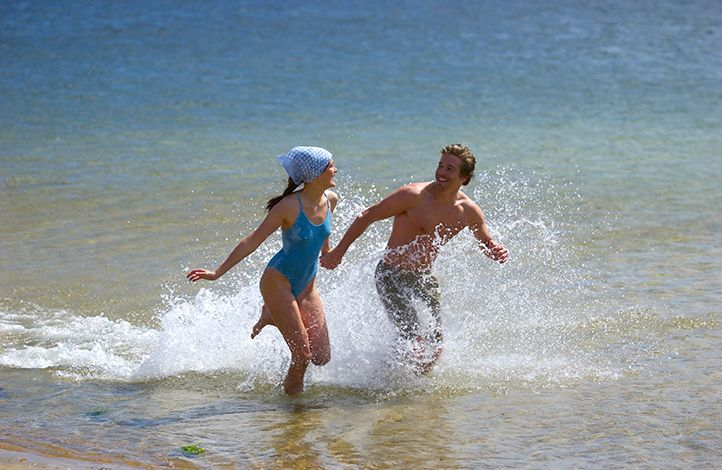

Modeller og portretter
Se merModeller og portretter
Øyeblikket. Følelsen. Stemningen. Å fange dette i et bilde er min – og enhver fotografs klare ambisjon.
Jeg har fotografert mennesker i alle aldre, fasonger og situasjoner i en årrekke.
Her kan du se et utvalg av morsomme, fargerike og stemningsfulle bilder av små og store.
Alle med sitt særpreg og egenart - fanget av kameraet i det riktige øyeblikket.
Alle bilder er tatt uten bruk av KI.
Anita foran Hvalfangstmonumentet i Sandefjord
Christer - en glad gutt
Sandefjords ordfører Bjørn Ole Gleditsch
Klar for picnic ved stranden - for Nordea
Klikk for stort bilde